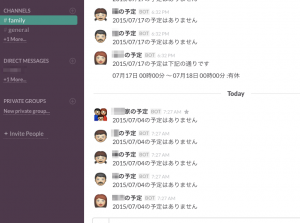

鉄は熱いうちに打て
=============================
IT × 家事育児 LT大会&交流会！！に行ってきました¶
2015-07-04
IT系わーママの集まりがあるということで行ってきました。実際はわーパパと半々くらいでしたが楽しかったです。
IT × 家事育児 LT大会&交流会！！忙しい合間を縫って会を主催してくださった @so_kazusan さん, さん, MichikoYamamotoさんありがとうございました！！ 寝ながらSkype会議だけで会が開けるなんて素敵です！！ 予約しやすい会場を提供してくださる 21cafe 様のような会場があってこそですが。
内容は子育ての悩みやITを使った育児ほうなど様々で楽しかったです。（私もLTしましたが、ちょっと内容を出せなくてすいません><）
子持ちの方がこんなに集まるなんてなかなかなので貴重な会でした。ありがとうございました。 私も触発されて、Google Calendarの内容をSlackに毎朝お知らせしてくれるスクリプトを作りました。
一番印象に残ったのは @kinu さんの「エンジニアなので瞬殺で作れる」です。 私も瞬殺でなんでも作れるようにこれからも精進します。上のSlackは超簡単で１５分くらいで作れるのでおすすめです。（作り方は自分で調べてください。。。）
ちょっとしたことにガンバルの重要。これからも頑張ります。